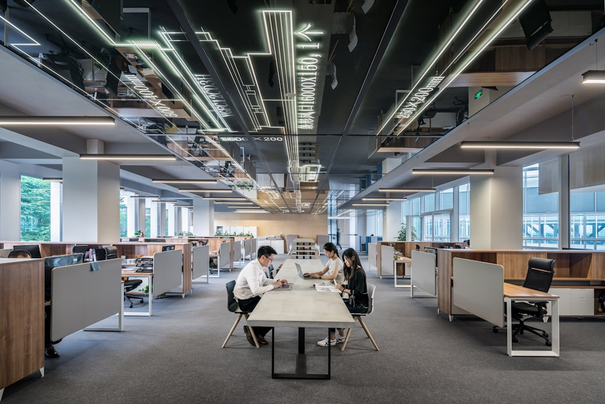
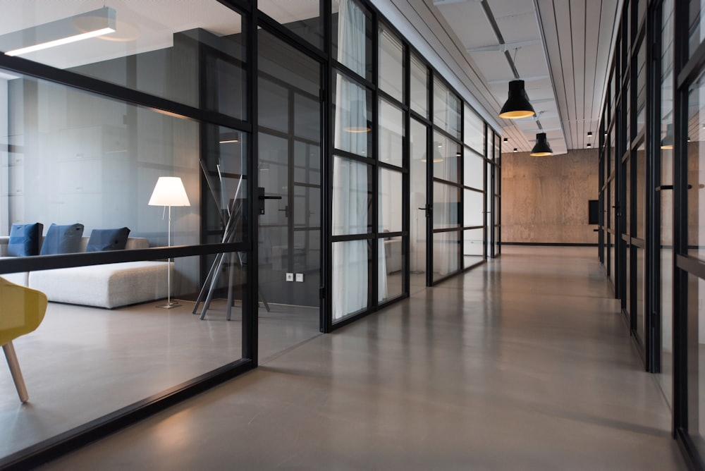

中小企業省力化投資補助金(一般型) 申請
レジ締め・記帳AI自動化システムによる経理・バックオフィス業務の省力化
POSとキャッシュレス明細をAIが自動突合してレジ締め・仕訳・日報を完結し、日次事務の削減と月次決算の早期化を実現する
 申請者イメージ:表参道の小規模ヘアサロン(5席・従業員5名)
申請者イメージ:表参道の小規模ヘアサロン(5席・従業員5名)
本事業のインパクト(1分で掴む要点)
対象業務の月間工数
導入前20→導入後2
時間/月
▲90%
月次試算表の完成(締後日数)
導入前10→導入後2
日
▲80%
年間の収益改善効果
132
万円/年
年商比 +4.4%
申請者概要
| 事業者名 | SALON BLOOM 表参道 |
| 業種 / 所在地 | 美容室(ヘアサロン) / 東京都渋谷区 |
| 創業 / 規模 | 2019年 / 5名・5席 |
| 年商 / 月商 | 3000万円 / 250万円 |
| 一人当たり年商 | 600万円 |
本事業のサマリー
| 投資総額 | 200万円 |
| 補助率 | 1/2 |
| 補助見込 | 100万円 |
| 自己負担 | 100万円 |
| 年商に対する収益改善率 | +4.4%(年132万円) |
本事業の狙い: POSとキャッシュレス明細をAIが自動突合してレジ締め・仕訳・日報を完結し、日次事務の削減と月次決算の早期化を実現する。省力化により創出した月20時間を、より付加価値の高い接客・技術・提案へ再配分し、一人当たり労働生産性の向上と従業員の処遇改善を同時に実現する。
レジ締めと記帳は毎日必ず発生する業務で、閉店後に毎日25〜35分、月20時間を要する。複数のキャッシュレス決済の突合や現金差異の調査は煩雑で、経理入力の負担と月次試算表の遅れが、タイムリーな経営判断を妨げている。
この業務が「いま」どうなっているか — 導入により何がどう変わるか
経理・レジ締めの月間工数
導入前20→導入後2
時間/月
▲90%
月次試算表の完成(締後日数)
導入前10→導入後2
日
▲80%
現状の労働実態(課題の定量化)
| 項目 | 現状 |
|---|
| 対象業務の月間工数 | 約22時間 |
| 担当 | 店長・スタイリストが兼務 |
| 発生タイミング | 営業時間中/閉店後の残業 |
| 属人性 | 高(特定者に依存) |
| ミス・機会損失 | 恒常的に発生 |
この工数が経営に与えている影響
なぜ看過できないか: 対象業務は付加価値を生まない間接業務でありながら、貴重な有資格者(美容師)の時間を月22時間奪っている。年商3000万円・従業員5名の小規模事業者にとって、この時間を施術・提案・育成へ振り向けられるか否かが、生産性向上と賃上げ原資の確保を左右する。
課題の構造(なぜ今、投資が必要か)
人手不足・時間不足という構造的制約
間接業務に時間を奪われ、
本業に集中できない
有資格者が
低付加価値作業に従事
残業・属人化・
ミスが常態化する
▼
→ 労働生産性と処遇改善の停滞(本事業で解決する課題)
※ 本計画の数値は業界実態に基づくデモ用の仮置きです。実申請時には自社の勤怠記録・POS実績等の裏付けデータに差し替えます。
本事業では、レジ締め・記帳AI自動化システムを導入する。人手で行ってきた一連の業務をAIが自動実行し、担当者は最終確認・承認のみを行う体制へ移行する。
省力化プロセス(5ステップの自動化)
Before:現行フロー(人手)
- 担当者が手作業で全工程を実施
- 作業が営業時間・閉店後を圧迫
- 品質・スピードが担当者に依存
- 記録・転記漏れやミスが発生
After:AI自動化フロー
- AIが自動実行、担当は承認のみ
- 24時間・無人でも業務が進行
- 品質を標準化・均一化
- 記録は自動化しミスを排除
本システムの差別化要因
POSと複数キャッシュレスの自動突合に加え、現金差異をレジ映像のタイムスタンプ照合で原因特定する点が差別化。仕訳・日報・月次サマリーを自動生成し税理士へ共有、月次決算を早期化して経営判断を加速する。
実機デモによる裏付け: 本システムの動作は付属のプロトタイプ(prototypes/09-ai-accounting.html)で実際に操作・確認できる。画面遷移・AI出力・効果数値を再現しており、審査における実現可能性の裏付けとする。

担当者は端末上で最終確認・承認を行うのみ
自動化のスコープ(責任範囲の明確化)
AIが自動実行する範囲
- POS・決済明細を自動取得
- AIが自動突合・照合
- 差異を検知し原因を特定
- 仕訳を生成し会計ソフト連携
- 日報・月次を自動作成
人が担う範囲(最終責任)
- AI出力の内容確認と公開承認
- 例外事象・顧客対応の判断
- 月次KPIレビューと改善指示
- アカウント・権限・データの管理
- 最終的な事業判断と責任の所在
※ AIは判断の補助と定型作業の代行に限定し、対外的な責任を伴う判断は必ず人が行う。責任範囲を明文化することで、導入後の運用リスクとガバナンス上の懸念を回避する。
中小企業省力化投資補助金(一般型)の賃金要件: 【大幅賃上げ特例(任意)】事業場内最低賃金+3.0%/年 かつ 給与総額+3.5%/年 を計画期間で達成すると補助率2/3・上限引上げ
賃金引上げ計画
| 区分 | 現行 | 計画 |
|---|
| 事業場内最低賃金 | 1,180円 | 1,220円 |
| 引上げ額 | — | +40円 |
| 給与総額 | 基準 | +3.5%/年 |
| 対象者 | 全従業員5名(雇用保険被保険者) |
処遇改善は、技術者の定着とサービス品質の維持に直結する
賃上げ原資の試算(年額) — 補助金に依存しない持続性の検証
| 区分 | 金額・数量 | 算定根拠 |
|---|
| ① 省力化による創出時間 | 240時間/年 | 月20時間 × 12か月 |
| ② 本事業による収益改善効果 | 132万円/年 | 省力化＋売上効果の合計(P4に定量根拠) |
| ③ 保守・運用費 | ▲24万円/年 | ②の18%を継続コストとして計上 |
| ④ 賃上げ所要額 | ▲36万円/年 | +40円/時 × 年間1,800時間 × 5名 |
| 差引 余剰(賃上げの持続可能性) | +72万円/年 | ② − ③ − ④ がプラスであることを確認 |
※ 差引がプラスであるため、本賃上げは補助金に依存せず事業収益で継続的に負担可能であり、借入返済(P6)を考慮しても資金繰り上の無理は生じない。
社会保険労務士の視点(処遇改善の実効性)
- 原資の確保: 上表のとおり本事業の収益改善が賃上げ所要額を上回り、無理のない持続的な引上げを実現する。
- 就業規則の整備: 賃金規程を改定し、事業場内最低賃金の引上げを規程上も明確化。労働条件通知書へ反映する。
- 労働時間の適正化: 省力化で残業を圧縮し、有給取得を促進。働きやすさと処遇の両面で職場を改善する。
投資内訳
| 項目 | 金額 |
|---|
| AIレジ締め・自動記帳システム(3年) | 102万円 |
| POS・キャッシュレス・会計連携開発 | 56万円 |
| 初期設定・仕訳ルール構築 | 26万円 |
| 導入研修 | 16万円 |
| 投資総額 | 200万円 |
| 補助金(1/2) | ▲100万円 |
| 自己負担額 | 100万円 |
資金調達
| 補助金 | 100万円 |
| 自己資金 | 50万円 |
| 金融機関借入 | 50万円 |
補助金は精算払いのため、つなぎ資金を金融機関借入で確保。返済は本事業の収益改善キャッシュフロー(年108万円)で賄う計画とし、資金繰りの安全性を確保する。
| 区分 | 導入時 | 1年目 | 2年目 | 3年目 |
|---|
| 収益改善効果 | — | 132万円 | 132万円 | 132万円 |
| 保守・運用費 | — | ▲24万円 | ▲24万円 | ▲24万円 |
| 減価償却(定額・5年) | — | 40万円 | 40万円 | 40万円 |
| 年間純効果 | ▲100万円 | +108万円 | +108万円 | +108万円 |
投資回収期間 約1.5年(自己負担ベース)。税務上はソフトウェア等を無形固定資産として計上し定額法で償却。中小企業向け税制の活用余地も税理士と精査する。
実施体制7. 実施体制・スケジュール
7 / 10
実施スケジュール(交付決定を起点とする6か月計画)
実施体制
| 役割 | 担当 |
|---|
| 統括責任者 | 代表者 |
| 現場推進 | 店長 |
| システム導入 | ベンダー+IT担当 |
| 効果測定 | 店長+顧問税理士 |
| 労務・賃上げ | 顧問社会保険労務士 |

月次で専門家と効果測定・改善検討を行う体制を敷く
専門家連携
- 中小企業診断士: 事業計画の実現性・生産性向上効果を監修
- 税理士: 資金計画・投資回収・減価償却・補助金経理を支援
- 社会保険労務士: 賃上げ計画・就業規則・労務要件を監修
- ITベンダー: システム構築・保守・運用定着を担当
交付決定前の発注厳禁: 本事業の設備投資・契約は必ず交付決定後に着手する(事前着手は補助対象外)。上記スケジュールは交付決定を起点として設計している。
効果測定の方法(月次モニタリング指標)
| 管理指標 | 目標値 | 測定方法・データ源 | 頻度 | 責任者 |
|---|
| 経理・レジ締めの月間工数 | 2時間/月 | 勤怠記録・作業ログ | 月次 | 店長 |
| 月次試算表の完成(締後日数) | 2日 | システム管理画面の実績値 | 月次 | 店長 |
| 1日のレジ締め時間 | 3分/日 | 解析ツール・予約システム | 月次 | 店長 |
| 記帳ミス | 0件/月 | 予約・顧客データベース | 月次 | 店長 |
| 一人当たり付加価値額 | 年+3% | 試算表・POS売上データ | 四半期 | 顧問税理士 |
| 事業場内最低賃金 | 1,220円 | 賃金台帳・労働条件通知書 | 年次 | 顧問社労士 |
※ 計画未達の場合は、四半期レビューで原因を分析し、AIの設定・運用フロー・人員配置を見直すPDCAを回す。指標・目標値・責任者を事前に定めることで、効果検証の客観性を担保する。
波及効果9. 地域・業界への波及効果
9 / 10
バックオフィスの自動化は、経営者が数字に基づく意思決定を行える基盤を作る。月次決算の早期化は金融機関との関係強化や資金調達の円滑化に資し、地域の小規模事業者の経営力向上に貢献する。
3つの波及効果
- 雇用の質の向上: 生産性向上を原資とした賃上げと働き方改善で、地域の雇用の魅力を高める。
- モデルの横展開: 本事業のノウハウは同業・近隣他業種へ展開可能で、地域全体のDXを牽引する。
- 顧客利便性の向上: サービス品質と利便性の向上が、地域住民・来訪者の満足度を高める。
波及の広がり
STEP 1
自店
省力化で創出した時間を高付加価値業務へ再配分し、賃上げを実現
▼
STEP 2
美容業界(同業)
同業へ横展開できる省力化モデルを提示し、業界の人手不足を緩和
▼
STEP 3
地域経済
雇用の質の向上と来訪者満足度の底上げで、地域全体の競争力に貢献
インバウンド需要の高い都心商業地域における波及モデルとして位置づける
波及効果の定量目標(3年後)
| 波及の対象 | 指標 | 現状 | 3年後の目標 |
|---|
| 自店(従業員) | 事業場内最低賃金 | 1,180円 | 1,250円 |
| 一人当たり付加価値額 | 基準 | 年+3%成長 |
| 美容業界(同業) | ノウハウ提供・視察受入 | 0件 | 年6件以上 |
| 地域経済 | 地域の外国人来訪者の受入対応 | 日本語のみ | 多言語対応のモデル店化 |
| 雇用(正社員) | 5名 | 7名(処遇改善により採用力向上) |
中小企業診断士の視点(事業の位置づけ)
本事業は単なる業務効率化にとどまらず、省力化で創出した経営資源を高付加価値活動へ再配分する経営変革である。人手不足という構造的制約を乗り越え、年商3000万円規模の小規模事業者が持続的に成長するための投資であり、地域経済の担い手としての基盤強化に資する。
要件確認10. 要件チェック・他制度
10 / 10
補助要件チェックリスト
| 要件 | 本計画の対応 | 判定 |
|---|
| 中小企業省力化投資補助金(一般型)の対象事業者 | 中小企業・小規模事業者(美容業)に該当 | ✔ |
| 省力化・生産性向上効果 | 月20時間削減・KPI改善を定量提示 | ✔ |
| 賃上げ計画(特例活用時) | +40円の引上げを計画(1,180円→1,220円) | ✔ |
| 交付決定後の発注 | スケジュールを交付決定起点で設計 | ✔ |
| 事業計画の実現可能性 | 実機プロトタイプ・専門家連携で裏付け | ✔ |
| 投資回収の妥当性 | 約1.5年で回収、累積CF計画を提示 | ✔ |
他制度への転用メモ
本計画のメイン: 中小企業省力化投資補助金(一般型)
本事業は省力化(生産性向上)効果が明確なため省力化投資補助金(一般型)を主軸とした。賃上げを主目的に据え直せば業務改善助成金への転用も可能。その場合は事業場内最低賃金の引上げ額(50円以上)を軸に、対象経費を生産性向上に資する設備投資へ組み替える。
実申請時は専門家の確認を経て提出する
重要: 本計画書はデモ用のサンプルです。数値(賃金・売上・投資額等)は仮置きであり、実際の申請にあたっては
①自社の実績データへの差し替え ②最新の公募要領との突合 ③認定支援機関・専門家(中小企業診断士・税理士・社会保険労務士)による確認 が必須です。補助金の採択を保証するものではありません。
提出書類チェックリスト(申請準備)
| 提出書類 | 入手先・作成者 | 状況 |
|---|
| 事業計画書(本書) | 申請者+中小企業診断士 | ✔ |
| 見積書(相見積り含む) | ITベンダー | ✔ |
| 直近2期分の決算書・試算表 | 顧問税理士 | ✔ |
| 賃金台帳・労働者名簿・就業規則 | 顧問社会保険労務士 | ✔ |
| 賃金引上げ計画書・労働条件通知書 | 顧問社会保険労務士 | ✔ |
| 実機デモ(プロトタイプ)による実現性の裏付け | ITベンダー | ✔ |
参照した最新公募情報(2026年時点): 省力化投資補助金(一般型)第6・7回公募 / 業務改善助成金 令和8年度
参考資料：計画の妥当性チェック美容業 / PLAN 09 / 自動生成
申請書の本文ではなく、審査で問われやすい4点を計画書とセットで確認するための参考ページ。数値はすべて出典つきの公開データで、推計値・仮定値は含まない（未取得の項目は空欄のまま示す）。
申請規模の妥当性目安内
| 投資総額 | 前提とする年商 | 年商に対する比率 | 目安（年商の1/3） |
|---|
| 200万円 | 3,000万円 | 6.7% | 999万円 |
投資総額200万円は年商3,000万円の6.7%で、目安である1/3以内に収まっている。
公募要領に明文化された基準ではなく、審査で事業規模との整合性を問われにくい目安。超過する場合は自己負担分の資金調達根拠（自己資金・融資枠）を計画書に明示すること。
対象経費のハード・ソフト要件ハードと一体で必須
中小企業省力化投資補助金（一般型）：情報システムの構築・購入費は『導入する設備と一体的に省力化を実現するもの』であることが条件。設備を伴わない業務ソフト・クラウドサービス単体（予約管理・顧客管理システム等）は対象になりにくい。
計画書での書き方：計画書では、導入するハードウェア（自動化・省人化機器）とソフトウェアを必ずセットで記載し、両者が一体で省力化を実現する構成図を示すこと。
採択率傾向・審査で見られる観点競争審査型
| 公募回 | 採択率 | 申請件数 | 採択件数 | 公表日 |
|---|
| 一般型 第4回 | 69.3% | 2,100件 | 1,456件 | 2026-03-06 |
| 一般型 第3回 | 66.8% | 2,775件 | 1,854件 | — |
計画書での勘所：単体設備ではなく『工程全体・事業全体への波及効果』を数値と作業動線で説明できている案件が採択されやすい。省力化指数・投資回収期間・付加価値額成長率を明示すること。
適格性／対象者・対象経費・必須要件の形式確認。ここで不備があると内容審査に進めない
技術・事業面／課題分析の的確さ、解決策の妥当性と独自性、投資回収期間、付加価値額の年平均成長率目標
計画面／実施体制（人員・財務状況）の妥当性、スケジュールの実現可能性、賃上げ目標の水準と達成見込み、会社全体への波及効果
政策面／地域経済への波及効果、国の政策アジェンダ（DX・GX・事業承継・輸出拡大等）との合致度
業界平均利益率との比較美容業 5.4%
| 統計値の種別 | 売上高営業利益率 | 本計画での扱い |
|---|
| 黒字かつ自己資本プラス企業の平均 | 5.4% | 目標水準として採用 |
|---|
| 全企業の平均値 | -4.6% | 赤字企業を含むため目標には使わない |
|---|
| 中央値 | -2.8% | 参考 |
|---|
| 自店の直近営業利益率 | （ ％） | 記入して上記と比較する |
|---|
標本: 日本政策金融公庫 国民生活事業が融資した法人企業のうち、従業者50人未満・決算期間1年の企業全事業者の母集団平均ではなく『公庫融資先』という選択バイアスのある標本。全業種で平均値が負値になっているのはこのバイアスと、決算期がコロナ影響期を含むことの複合と考えられる。
出典
- 申請規模の目安: 2026-07-25 ミーティング（山本・平）での実務的な経験則（実務経験則（公的な審査基準ではない））
- 対象経費要件: 中小企業省力化投資補助金（一般型） 公式サイト https://shoryokuka.smrj.go.jp/ippan/
- 採択率・審査傾向: https://www.chusho.meti.go.jp/koukai/hojyokin/saitaku/2026/260306001.html
- 業界平均: 日本政策金融公庫『小企業の経営指標調査』2023年度調査（決算期2022年7月以降（融資時期2023年4〜12月・2024年8月公表）） https://www.jfc.go.jp/n/findings/shihyou_kekka_m_index.html
- 業界平均の標本: 日本政策金融公庫 国民生活事業が融資した法人企業のうち、従業者50人未満・決算期間1年の企業
- 本ページは improvement/_build/data/benchmarks.json から自動生成。数値の更新は同ファイルを直し apply_benchmarks.py を再実行する。